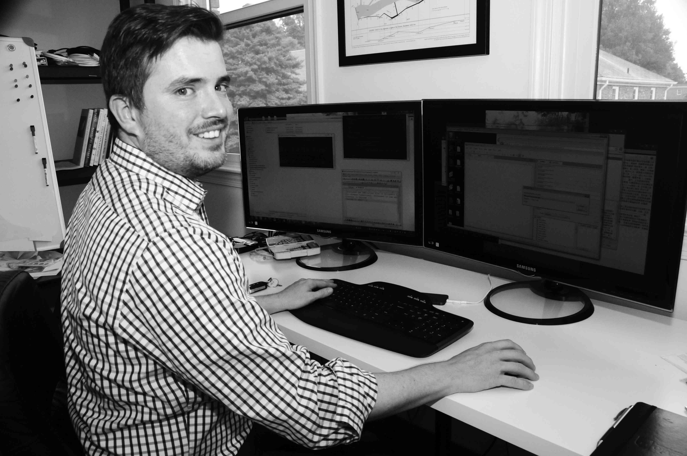

 |
 |
Jon Canty has been working in ediscovery and litigation support since 2006 in a variety of capacities: ediscovery consulting, law firm litigation support and in-house corporate litigation support. Prior to starting his first company in 2010, Jon was the Litigation Support Manager at Kirkland & Ellis' Washington, DC office. |
Joe Ulfers is a professional programmer who switched to ediscovery processing and litigation support in 2010. Since then, he started two successful ediscovery companies and provided litigation support and consulting in a Fortune 10 legal department. |
| jon@sandlinediscovery.com | joe@sandlinediscovery.com |
We started Sandline in 2014 with the simple dream of building a better ediscovery processing vendor. Read more on our blog.